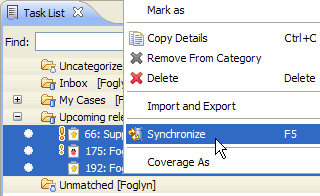

Foglyn 1.2 (11th February 2009)
New features:
- Estimate values are displayed in the case editor, and current estimate can be changed as well. Foglyn tries hard to understand estimate entered by user, and immediately reports if value is correct or not. Estimate of Mylyn task is changed from FogBugz value too. (Note that changing of estimate doesn't work with some older FogBugz versions)
- Due date/time is editable in case editor. Various due date formats are supported.
- When task is activated/deactivated in Eclipse, Foglyn reports this task to FogBugz. This enables "Working On" feature of FogBugz to track tasks from Mylyn. (Foglyn reports all cases which have estimate, and are not closed)
Release Notes
To fetch due time and estimates for existing tasks, please do the following: expand your query in Task List, select all tasks inside your query and start synchronization via context-menu or keyboard shortcut.
